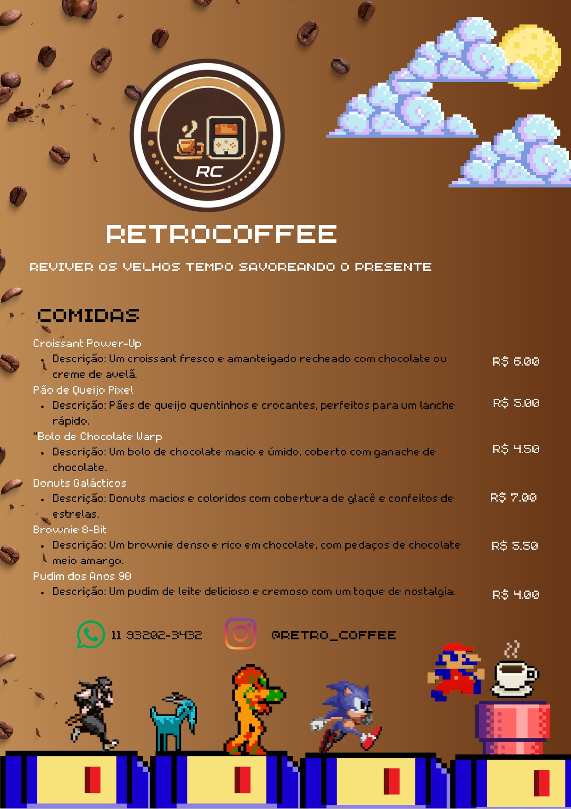
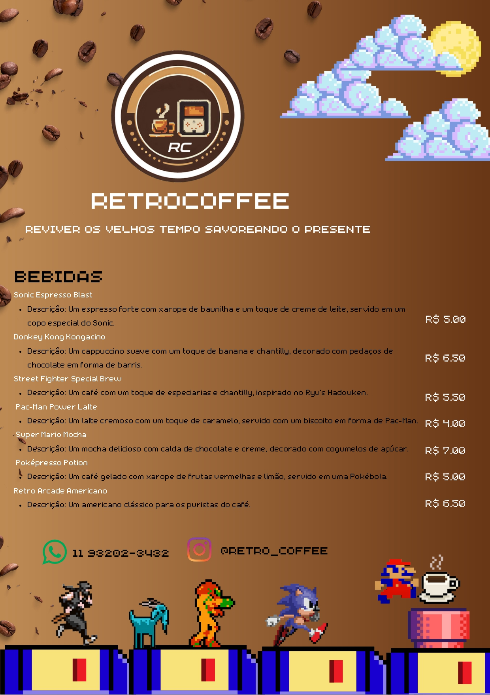

A retrocoffee é uma cafeteria que tem o objetivo de forcener cafés alguns lanches e a possibilidade de jogar jogos retro da forma antiga, em grandes maquinas de fliperama enquanto aprecia seu café.

A cafeteria "RetroCoffee", Conta com um vasco cardapio relacionado ao tema da cafeteria.
 